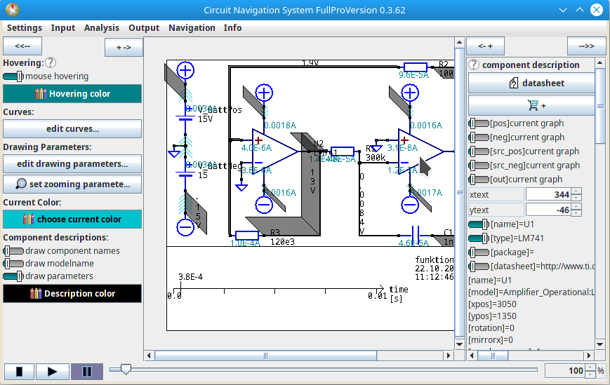

The Main Window
The main window is the first window that appears after the AniCAD program is started, and via closing the main window, the program ends as well.
It contains:
a control bar at the top
the schematic image in the center
the time control at the bottom
a panel to control settings at the left
a panel to display informations about a selected component or wire at the right
The main window can look like this example:

Control bar at the top
The control bar contains a menu, from which you can start several actions:
in the "Settings"-Menu, you can change the settings
in the "Input"-Menu, you can load the schematic files into the program
in the "Processing"-Menu, you can select how the previously loaded schematics shall be analyzed
in the "Output"-Menu, you can choose to save a picture or a video of the analyzed schematic
in the "Navigation"-Menu, you can select which sheet shall be shown, and you can zoom in and out.
in the "Info"-Menu, you can find out more about this program.
Schematic image in the center
As soon as you have opened a schematic file, the center of this window shows the circuit of that file.
As soon as the circuit is analyzed, the aquaeducts for voltages and the symbols for current flow are also shown in that window center, overlayed over the circuit.
In the example above, the image is larger than the available space in the center of the window. In cases like this one, scrollbars appear automatically for selecting the shown part.
Time control at the bottom
As soon as a circuit is analyzed, the control panel appears at the bottom of the window. Via this panel you can control the independent variable's value, which usually - for transient analyses - is the value of the simulated time.
This control panel consists of a ruler for directly setting the value of the independent value, and play/pause/stop-buttons which can be used to start/pause/end an image-stream, similar to a video.
Panel for general settings at the left
This panel allows you to set some settings (which shall not be confused with the program settings mentioned above)
These settings are at the moment:
turn hovering on or off
set hovering color
edit the general drawing parameters
Panel for individual settings at the right
As soon as you have loaded a schematic into the program, you can click on a component or a wire of the schematic circuit. When you do so, the panel at the right shows you some informations about that individual component or wire which you selected.
If you have selected a wire, you can:
set the color of the wire
add or remove a line graph for the voltage of this wire
edit the voltage drawing parameters for this wire individually.
If you have selected a component, you can:
see a component description
open links to the datasheet, if such links are given for that component
open links to a website where you can purchase the component, if such links are given for that component
set the text position of the component's description.
add or remove a line graph for the current through each of this component's connections